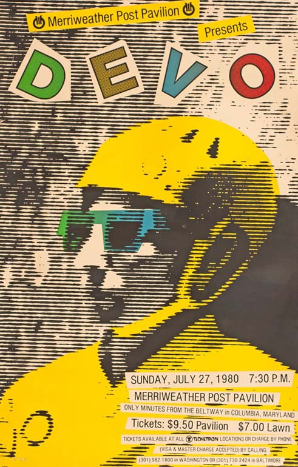
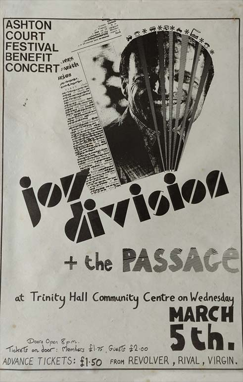
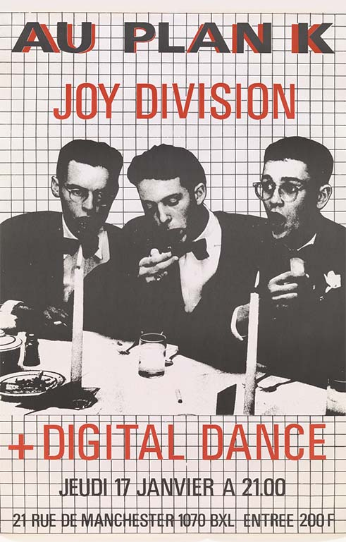
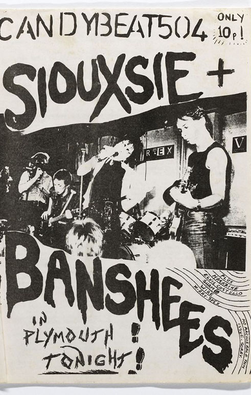
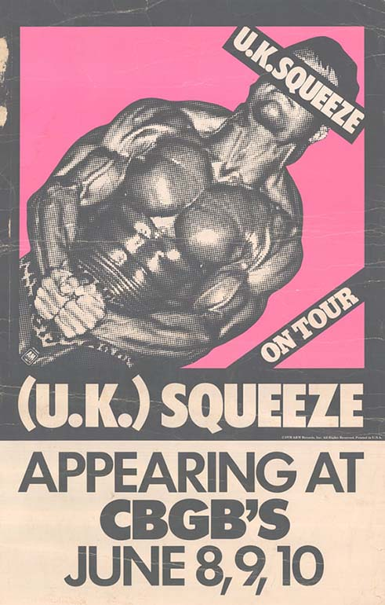
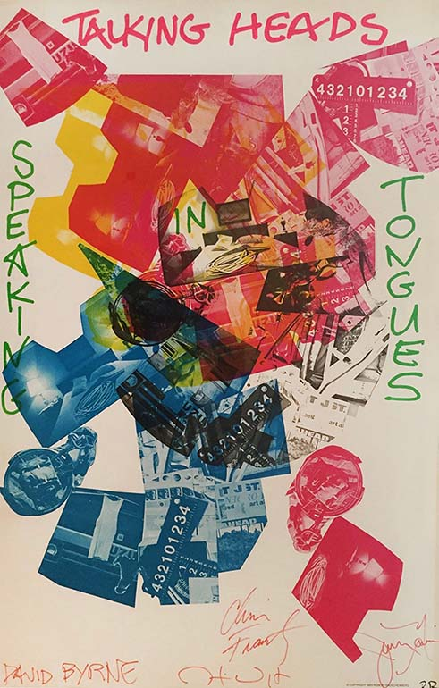
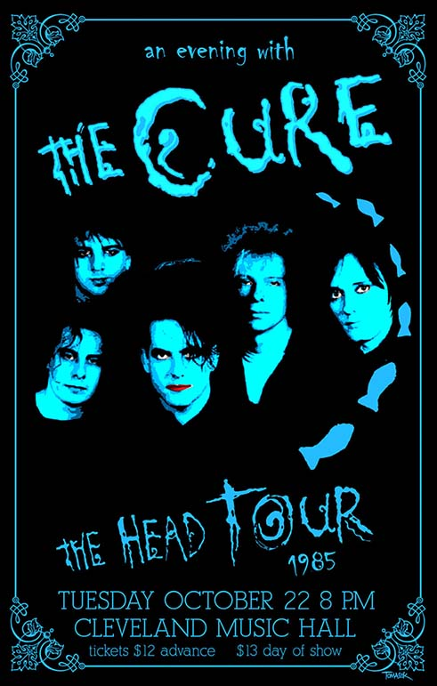
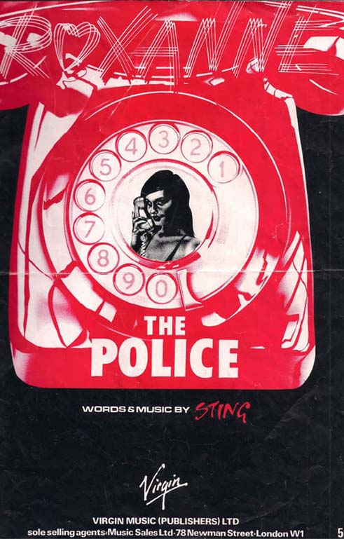
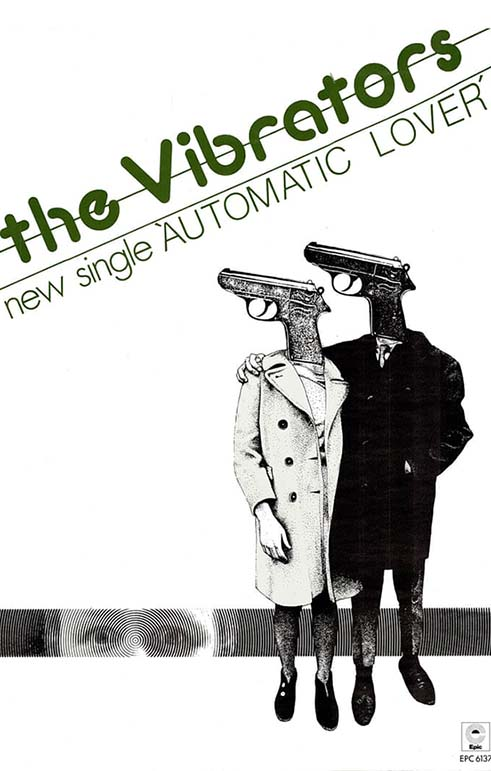

DEVO poster from 1980.
Joy Division poster at the Trinity Hall Community Center.
French Joy Division and Digital Dance poster from 1980.Japanese New Order poster for their show in Tokyo.
Punk Fanzine Candybeat 504 with Siouxsie and the Banshees.
Squeeze poster for their CBGB shows in 1978.
Talking Heads poster for their album "Speaking in Tongues", signed by the members.
The Head Tour poster for The Cure in 1985.
The Police poster with original artwork from the 1978 UK sleeve of Roxanne.
Poster for The Vibrators single 'Automatic Lover' in 1978.